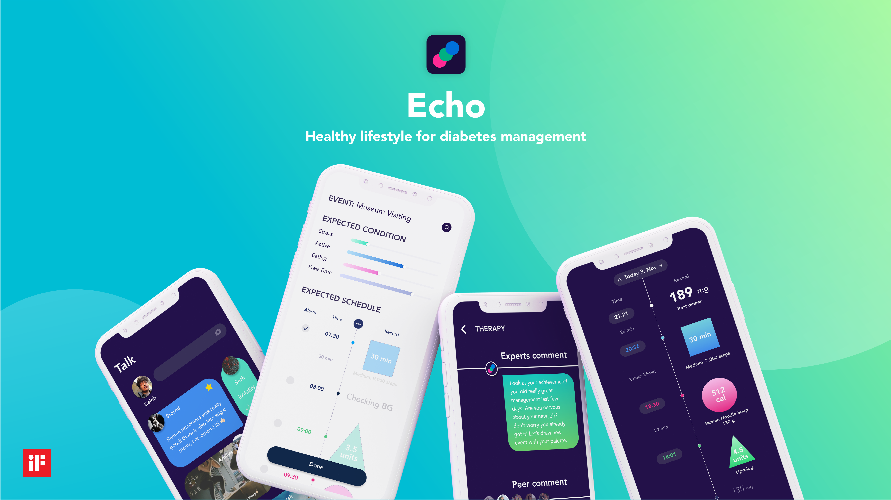

Award
Echo – Healthy lifestyle for diabetes management

‹Echo› aims to tackle stress and other issues associated with diabetes that can cause depression and other issues. ‹Echo› is a healthcare platform that records glucose levels in the blood, interacts with diabetes patients to assist in managing these levels, and supports mental care by meticulously analyzing patients’ sentiments through a mobile service. ‹Echo› seeks to change negative thought patterns that patients might develop while suffering diabetes. As such, ‹Echo› provides appropriate behavioral therapy to minimize the depression and stress caused by diabetic problems and improves the quality of life in different aspects of daily life.
‹Echo›는 효율적인 혈당 기록과 질병 관리를 지원하며, 당뇨와 관련한 환자의 감정을 세심하게 분석해 질병 심리 관리를 돕는 디지털 헬스케어 플랫폼이다. ‹Echo›는 당뇨병을 앓는 동안 발생할 수 있는 부정적인 사고 패턴을 전환하여, 질환으로 인한 우울증과 스트레스를 최소화한다. 환자는 ‹Echo›를 통해 일상 생활의 다양한 측면에서 삶의 질을 향상시키는 적절한 행동 치료를 제공 받는다.
Idea
Young diabetes patients with depression and stress further exacerbate their blood sugar control, disrupting their own self-care and facilitating negative thoughts. To sustain their conditions, patients should reschedule and advance their self-care based on their mutually recorded experiences.
‹Echo› aims to promote a healthy lifestyle to maintain patients’ health under the chronic conditions of diabetes. Patients will ultimately become resilient against the mental and physical detriment. This will also motivate patients to actively engage in self-care. This virtuous cycle may boost the patient’s confidence to focus on self-care.
Form
For diabetes patients, it is crucial to monitor their condition. However, the fact that they have to manage a large amount of data makes them stressed. As a result, they start avoiding their own self-care. ‹Echo›’s unique visual interface is designed with users in mind, which makes it easier for patients to acquire their own data. To view the data on the blood glucose levels, the patient must zoom in on the graph. This enables the realization of each element’s effect on the blood glucose levels. Moreover, they can understand the effect of each element on blood glucose levels, which in turn will push them to engage in checking their blood glucose levels on daily basis.
Function
‹Echo› provides messages for patients to check their habits and enable them to record their data with a simple categorical choice, which can then be displayed on a magnified graph. If the graph shows the patient’s life track in the wrong direction, ‹Echo› will synchronously provide therapy to put the patient back on a healthy track.
The users can record new changes in their lifestyle and identify new problems. When a user makes a new solution to the problem, this will be saved as a card in the user’s palette, so the user can share it as an experience with others. This will enhance the user’s confidence while managing a healthy lifestyle.
Differentiation
The existing diabetes platforms mainly utilize insulin care to tackle diabetic problems. ‹Echo› focuses on patients’ lifestyles by providing a palette function. It allows them to actively redefine their problems by reviewing their shared experiences. Palette will prepare diabetes for a new change in their surroundings, supplying them with information in advance to defend new changes.
‹Echo›’s therapy platform provides well-known cognitive behavioral therapy solutions for diabetic problems. It intends to minimize depression and stress, ultimately improving the quality of life in different aspects of daily life.
Impact
Diabetes patients, especially those in their 20s, have increased due to improper intake habits and changes in living conditions. Most of these young patients are diagnosed with high psychological distress that worsens their health outcomes with poor blood sugar control. Nevertheless, it is difficult to find a service that improves patients’ habits. ‹Echo› provides a platform for patients to modify their habitual activities positively by boosting their self-care. It is based on participatory activities, which has been proven as an effective method. Participatory treatment eventually helps doctors to diagnose patients accurately and effectively.